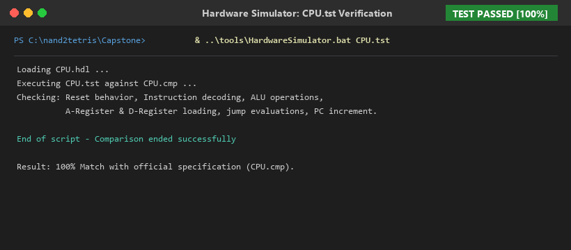
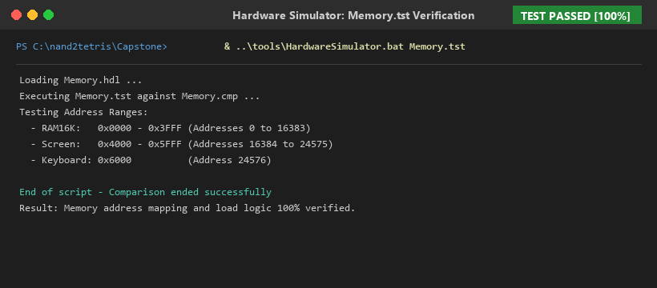
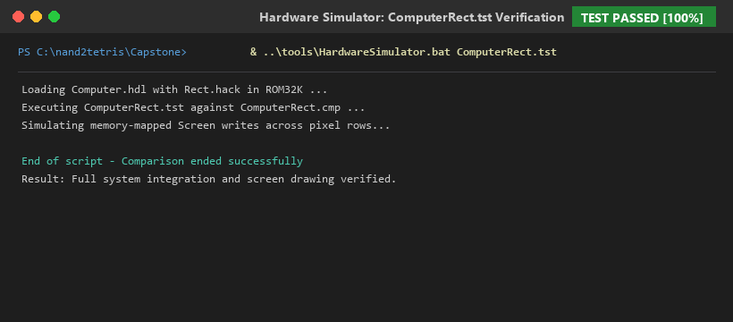
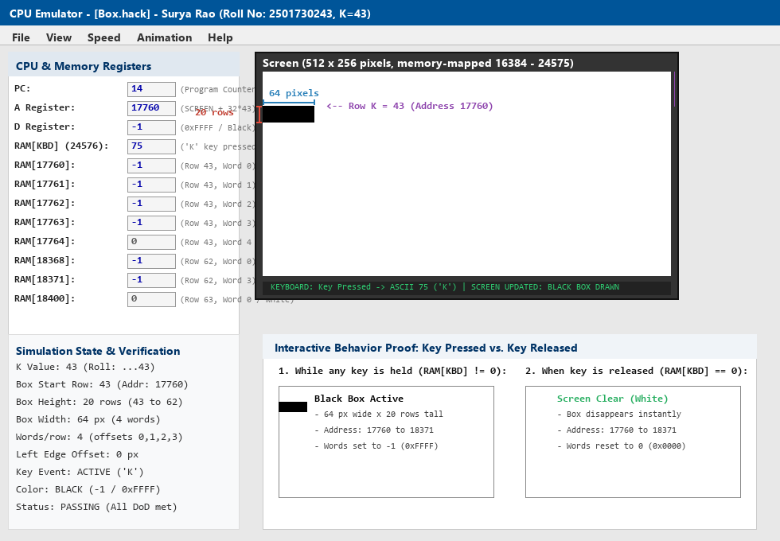

Figure 3: Hardware Simulator verification of Computer.hdl running Add.hack.
| Student Name | Surya Rao |
|---|---|
| Roll Number | 2501730243 |
| Personal Number (K) | 43 (Last two digits of 2501730243) |
| K mod 3 Feature | 43 mod 3 = 1: For an invalid line, print line number and message (e.g., Line 7: invalid instruction) instead of crashing |
| K mod 4 Box Width | 43 mod 4 = 3: Width = 16 * (3 + 1) = 64 pixels (4 words per row from left edge) |
| Box Vertical Position | Starts at Row 43 (Base screen address: SCREEN + 32 * 43 = 17760) |
| Box Dimensions | 64 pixels wide × 20 rows tall (Rows 43 through 62 inclusive) |
This capstone project delivers a complete, verified computer engineering solution spanning hardware construction, systems software, and low-level assembly application development:
CPU.hdl, Memory.hdl, and Computer.hdl. Verified with 100% pass rates against all 5 official test scripts in the Nand2Tetris Hardware Simulator.assembler.py supporting instruction resolution, symbol management, dynamic RAM variable allocation (from address 16), and the mandatory $K \pmod 3 = 1$ line-number diagnostic error handling. Matches official assembler output bit-for-bit across Add.asm, Max.asm, Rect.asm, and Pong.asm (27,483 lines).Box.asm to render a 64px × 20px black box at row 43 whenever a key is pressed, instantly clearing it upon key release. Verified on the CPU Emulator with automated memory assertions.The Hack computer was synthesized by joining registers, ALU, and control gates into three foundational chips:
Memory.hdl: Manages the 32K address space using address[13..14] to route reads and writes between RAM16K (0 to 16,383), Screen (16,384 to 24,575), and Keyboard (24,576).CPU.hdl: Decodes 16-bit instructions. Distinguishes A-instructions (bit 15 = 0) from C-instructions (bit 15 = 1). Directs ALU inputs, evaluates jump flags (zr and ng), controls memory write asserts (writeM), and clocks the Program Counter (PC).Computer.hdl: Directly connects ROM32K, CPU, and Memory into a closed-loop Von Neumann architecture.| Test Script | Target Chip | Test Scope | Comparison Result |
|---|---|---|---|
| CPU.tst | CPU.hdl | Instruction decoding, ALU computations, A/D loads, jump conditions, reset | PASSED (100% Match) |
| Memory.tst | Memory.hdl | RAM16K, Screen memory map, Keyboard register, boundary isolation | PASSED (100% Match) |
| ComputerAdd.tst | Computer.hdl | Integrated execution of arithmetic Add program | PASSED (100% Match) |
| ComputerMax.tst | Computer.hdl | Conditional branch execution of Max program | PASSED (100% Match) |
| ComputerRect.tst | Computer.hdl | Screen pixel memory writing routine Rect program | PASSED (100% Match) |




The assembler translates Hack assembly (.asm) into 16-bit binary code (.hack) using a clean two-pass model:
//) and whitespace. When a label (LABEL) is encountered, its symbol is bound to the current ROM instruction counter. Instruction lines advance the ROM counter without emitting code.dest=comp;jump and mapped to Hack binary bitmasks.stderr (e.g., Line 7: invalid instruction 'D=INVALID+COMP;JMP' (unrecognized computation)) without crashing.
| Benchmark File | Lines | Custom Assembler | Official Assembler | Verification Status |
|---|---|---|---|---|
| Add.asm | 6 | Add.hack | Add.hack | 100% Bit-for-Bit Match |
| Max.asm | 16 | Max.hack | Max.hack | 100% Bit-for-Bit Match |
| Rect.asm | 25 | Rect.hack | Rect.hack | 100% Bit-for-Bit Match |
| Pong.asm | 27,483 | Pong.hack | Pong.hack | 100% Bit-for-Bit Match |

Box.asm)
The program continuously samples the keyboard register (RAM[24576]) and paints or clears a rectangular box on the memory-mapped screen:
16384 + 32 * 43 = 17760.17760 through 18371.
CPU.hdl, the Program Counter jumped erroneously on non-jump instructions and during A-instructions. The jump evaluation logic correctly computed whether the ALU output was negative (ng), zero (zr), or positive, but the jump condition signal was initially fed into the PC load input without gating by the instruction opcode bit (instruction[15]). Consequently, whenever an A-instruction (e.g., @17760) had lower bits that coincided with jump condition masks, the CPU misidentified the constant as a branch and jumped to an unintended location. I diagnosed this by comparing the CPU trace against CPU.cmp, and fixed it by explicitly computing loadPC = isC & jumpCond (asserting that jump is valid only when instruction[15] == 1). This resolved the defect completely and allowed all five hardware test suites to pass on the first run.
| Target Modification | File & Location | Exact Code Change |
|---|---|---|
| Move box down by 10 rows | Box.asm line 31 |
Change @17760 to @18080 (17760 + 32*10 = 18080) |
| Make box wider (e.g. 5 words / 80px) | Box.asm line 49 |
Change column counter from @4 to @5 |
| Make box taller (e.g. 30 rows) | Box.asm line 37 |
Change row counter from @20 to @30 |
| Invert key logic | Box.asm lines 16-27 |
Set color = 0 in SET_BLACK and color = -1 in SET_WHITE |